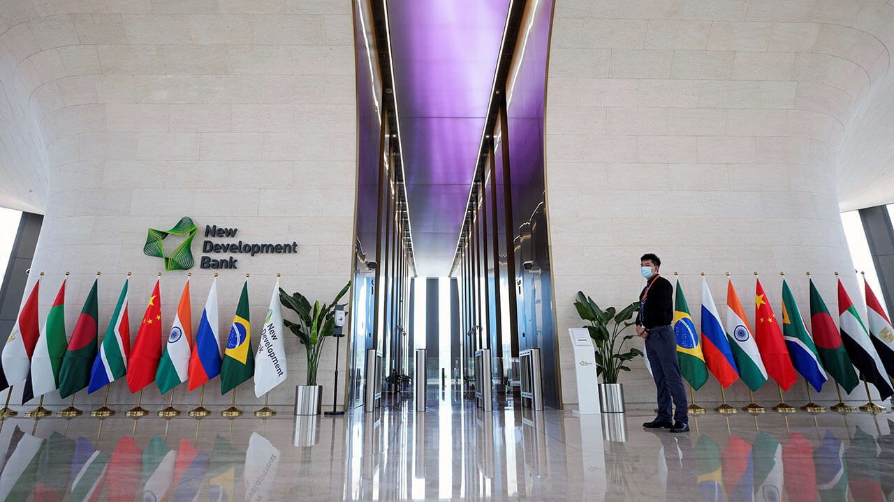

Présentation : Une force économique majeure
Avec l'élargissement de 2024, le bloc représente près de **45% de la population mondiale** et détient une part majoritaire des ressources énergétiques mondiales. Symboliquement, en termes de PIB à parité de pouvoir d'achat (PPA), le bloc des BRICS dépasse désormais celui du G7.

L'initiative la plus concrète est la création de la Nouvelle Banque de Développement (NBD), qui finance des infrastructures sans les conditions du FMI. De plus, le groupe accélère les efforts de "dédollarisation", encourageant le commerce en monnaies locales pour contourner les sanctions occidentales.
Vidéo : Les BRICS et l'économie mondiale
Avis sur l'impact économique
| Avis Positifs | Avis Négatifs / Sceptiques |
|---|---|
| "La NBD offre enfin des financements pour nos infrastructures sans diktats politiques." | "L'économie du groupe est trop déséquilibrée : la Chine est bien trop dominante." |
| "Commercer en monnaies locales est vital pour se protéger de l'extraterritorialité du dollar." | "La dédollarisation est un vœu pieux, aucune monnaie BRICS n'inspire la confiance du dollar." |
| "C'est le marché de consommation du futur avec une classe moyenne en explosion." | "Beaucoup de ces économies (Russie, Iran) sont trop dépendantes des hydrocarbures." |